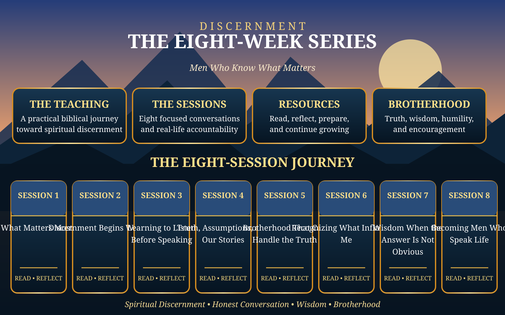

Read
Spend time with Scripture and the session reading before gathering.

Discernment is more than recognizing what is right or wrong. It is learning to examine, understand, weigh, and respond through the wisdom of God.
These sessions create space for men to grow in their walk with God, become more honest with themselves, listen with care, make wise decisions, and strengthen one another. The goal is not to have every answer. The goal is to keep growing in truth, humility, and spiritual maturity.
Each session includes a short student reading, personal reflection, and one practical accountability assignment to carry into the gathering.
Spend time with Scripture and the session reading before gathering.
Examine your own heart, thoughts, choices, and relationships honestly.
Complete one intentional accountability assignment in daily life.
Come ready to listen, share, encourage, and grow alongside other men.
See the journey from beginning to end, then choose a session to explore.

Start at the beginning, or return to a session as your growth and conversations lead you.
Recognizing what deserves our attention.
Read Session ↗ SESSION 02Learning to examine our own hearts.
Read Session ↗ SESSION 03
The discipline of understanding.
Read Session ↗ SESSION 04Separating facts from interpretation.
Read Session ↗ SESSION 05Honesty, accountability, and growth.
Read Session ↗ SESSION 06Examining the voices that shape our decisions.
Read Session ↗ SESSION 07Prayer, patience, and wise counsel.
Read Session ↗ SESSION 08
Applying discernment through words and actions.
Read Session ↗Explore the heart behind this study, the biblical foundation, and practical ways to make each session meaningful.